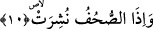

gelmektedir. Bu üslub, daha etkileyici va daha vurgulayıcıdır. Bundan dolayı açıkça
söylemektense ta’riz tercih edilmiştir.
Burada öldürülen kız çocuğuna “sen neden öldürüldün” denilmeyip de “o neden
öldürüldü” deniliyor. Bu üslubun seçilmiş olması da aynı şekilde sebebsiz değildir.
Çünkü bu, bahsi geçen kız çocuğuna hitab edilmeyi anlatan bir ifâde değildir. Tam
tersine onun durumundan haber veren bir ifâdedir.
Bir başka kırâat şeklinde yukardaki okuduğumuz âyet “suilet/soruldu” şeklinde değil
de “seelet/o kız sordu” biçimindedir. Bu takdirde kız çocuğu neden öldürüldüğünü
Allah’a veya kendi katiline sormuş olmaktadır. Böylece o kızın sözü hikâye edilmiş
değil, bizzat kendisi bunu sormuş olmaktadır.
Rivâyete göre İbn Abbas (r.a.)’ya müşriklerin çocuklarının azap görüp
görmeyecekleri sorulmuş, o da onların azap görmeyeceklerini söylemiştir. İbn Abbas bu
görüşünü yukarda okuduğumuz âyete dayandırmıştır. Çünkü bu âyetten anlıyoruz ki azap
ancak günah işlenilerek hakedilir. Müşriklerin çocukları günah işlemeden öldüklerine
göre onlar azap görmeyeceklerdir.
İbn Mes’ud (r.a.)’ın yaklaşımına göre kız çocuğunu diri diri toprağa gömen anne de
kız da Cehenneme gideceklerdir. Ancak ifâdeyi yanlış anlamayalım. Toprağa diri diri
gömülen kız, buluğ çağına ermiş de toprağa gömülmüşse Cehenneme gidecektir.
Bu son âyette riya, süm’a ve heva ile karışık amellerimiz hakkında bize bunların
nuriyetini ve nûrâniyetini neden ortadan kaldırdığımızın sorulacağına işâret vardır. Öte
yandan aynı âyette nefs-i hayvaniyenin üzerine alıp götürdüğü ve beden kabrine gömüp
helâk ettiği nefs-i natıka adındaki diri diri gömülen kıza hangi günahtan dolayı
gömüldüğünün sorulacağına işâret vardır. Bir başka ifâdeyle nefs-i natıkaya, nefs-i
hayvaniyenin hangi gazap, şehvet veya bunun dışında başka bir günahtan dolayı baskın
geldiği sorulacaktır. Baskın gelerek onu kendi özelliklerinden, fiilerinden mahrum ettiği
ve neden onu helâk ettiği sorulacaktır. Burada sebebi ortaya çıkarma talebi “sual”
kelimesiyle kinâyeli olarak anlatılmaktadır. Bundan dolayı Peygamberimiz (s.a.) “el-
vaidetu (gömen) vel-mevudetu (gömülen) Cehennemdedir” buyurmuştur.[30] Çünkü
nefs-i natıka nefs-i hayvaniye ile birlikte Cehennemde olacaktır. Nitekim Kàşànî bu
şekilde söylemiştir.
10. (Amellerin yazılı olduğu) defterler açıldığında,
Amel “defterler”i “açıldığında.” Çünkü amel defterleri kişi öldüğünde dürülür ve
hesap zamanı geldiğinde açılır. Bir başka ifâdeyle; defterler açık bir biçimde insanlara
sağ ve sollarından verilir. Böylece kişi defterinin içinde olanlara vâkıf olur. Ona bütün
amelleri sayılıp dökülür. Bunun üzerine kişi Kur’an’ın ifâdesiyle “Vay hâlimize! Bu